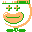
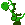
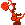
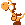
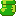
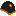

Cloud - a floating vehicle the player can ride by jumping on top. It can only be ridden for a short time before flashing and disappearing, causing the player to fall. It can be placed on its own or obtained by defeating a Lakitu.
Clown Car - a flying vehicle the player can enter by jumping on top. It’s bouncy, and enemies can ride it too. It can also be set as a Fire Clown Car, which shoots fireballs, or a large fireball if the button is held.

Yoshi - a rideable companion that can spawn in an egg, as a baby, or fully grown. As a baby, Yoshi can be carried and eat objects. After eating 5 objects, he becomes an adult. adult Yoshi can eat enemies with his tongue, jump on hazards like spikes and saws, and give the player a mid-air jump boost when dismounted. Eating a red shell makes him spit a fireball.

Yoshi (Red) - when Red Yoshi eats any shell, he shoots out a fireball.

Yoshi (Yellow) - when Yellow Yoshi eats any shell, he can perform ground pounds after jumping. After swallowing the shell, this ability is lost.

Yoshi (Blue) - when Blue Yoshi eats any shell, he grows wings and can fly for a short time before swallowing it.

Goomba Shoe - a rideable vehicle the player moves by jumping on top of it. It can be powered-up, allowing the player to perform ground pounds. when winged, it grants a short hover while airborne. It can also be visually styled as a Stiletto, but this is purely cosmetic.

Buzzy Beetle Shell - can be kicked around or worn as a helmet. When worn, it protects your head from most impacts and grants an extra hit point.

Spiny Shell - can be kicked around or worn as a helmet. When worn, it protects your head from many impacts, allows you to break blocks you normally couldn’t, and grants an extra hit point.